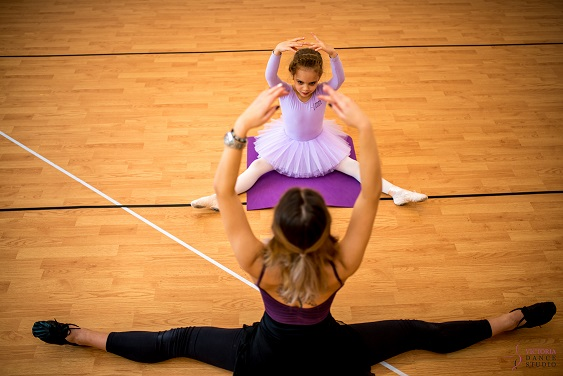

Cursurile de balet pentru copii sunt organizate in module. La sfarsitul modulului I, copii vor sustine un spectacol pe scena unui teatru. La sfarsitul modulului II, copii vor sustine o lectie deschisa, iar la sfarsitul modulului III, copii vor sustine un spectacol pe scena unui teatru.
În cadrul fiecarei grupe, copiii primesc roluri pentru spectacolul de sfărșit de an. Din acest motiv, este esential ca programul fiecarei grupe să fie respectat. Păstrând aceeași grupă, copiilor le este mai usor să repete rolul în spectacol și să construiască prietenii și relații cu aceiași colegi.
Structura este foarte importantă pentru crearea unei atmosfere de încredere fără anxietati sociale și pentru dezvoltarea copiilor. Ne dorim să accesăm imaginația artistică a celor mici, iar pentru acest lucru, confortul lor emoțional este foarte important.